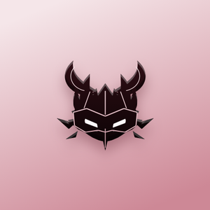
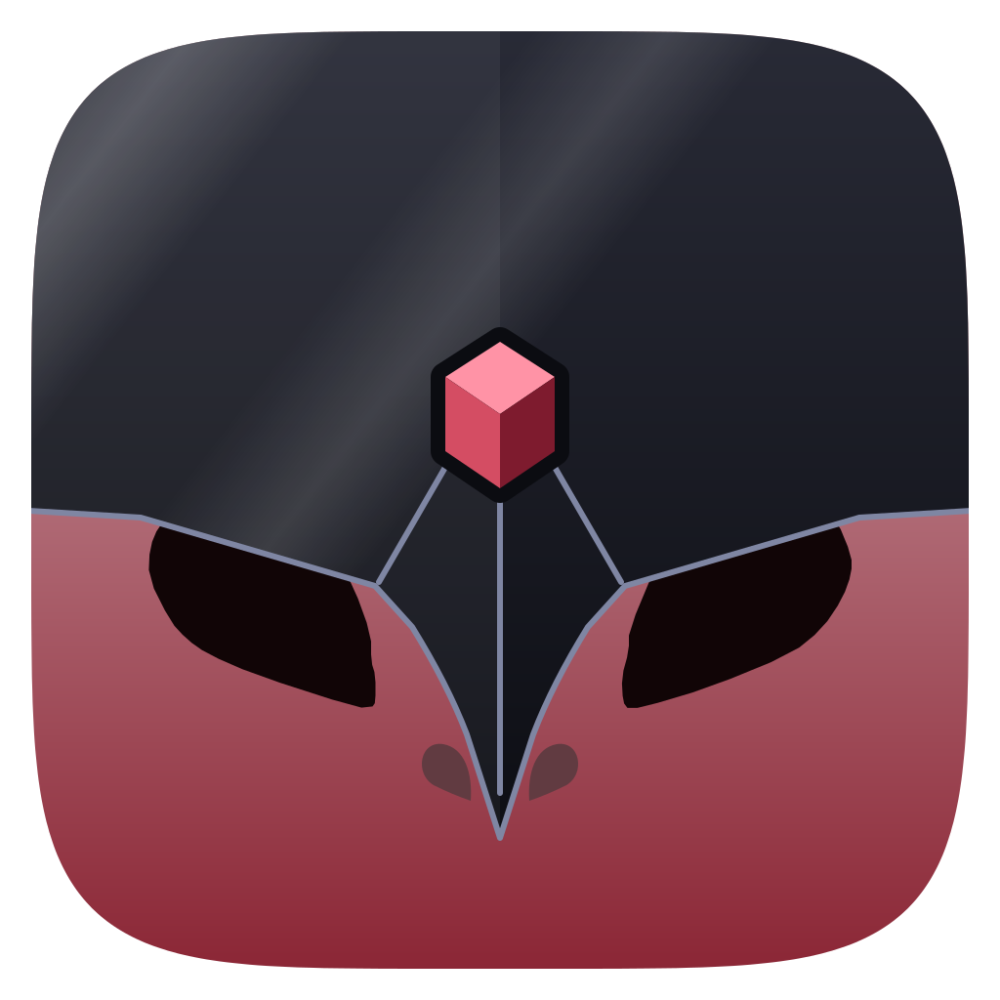

Fantasia: do ícone atual ao elmo sobre a pele

Atual (claro)
→

Elmo v3, cubo (claro)
→
Elmo v4, prisma (claro)
Atual (escuro)
→
Elmo v3, cubo (escuro)
→
Elmo v4, prisma (escuro)
Legibilidade em 144, 96, 72 e 48 px
Sombrio claro
Sombrio escuro
 Elmo v4, prisma (claro)
Elmo v4, prisma (claro) Elmo v4, prisma (escuro)
Elmo v4, prisma (escuro)